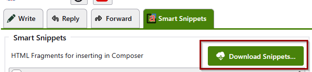
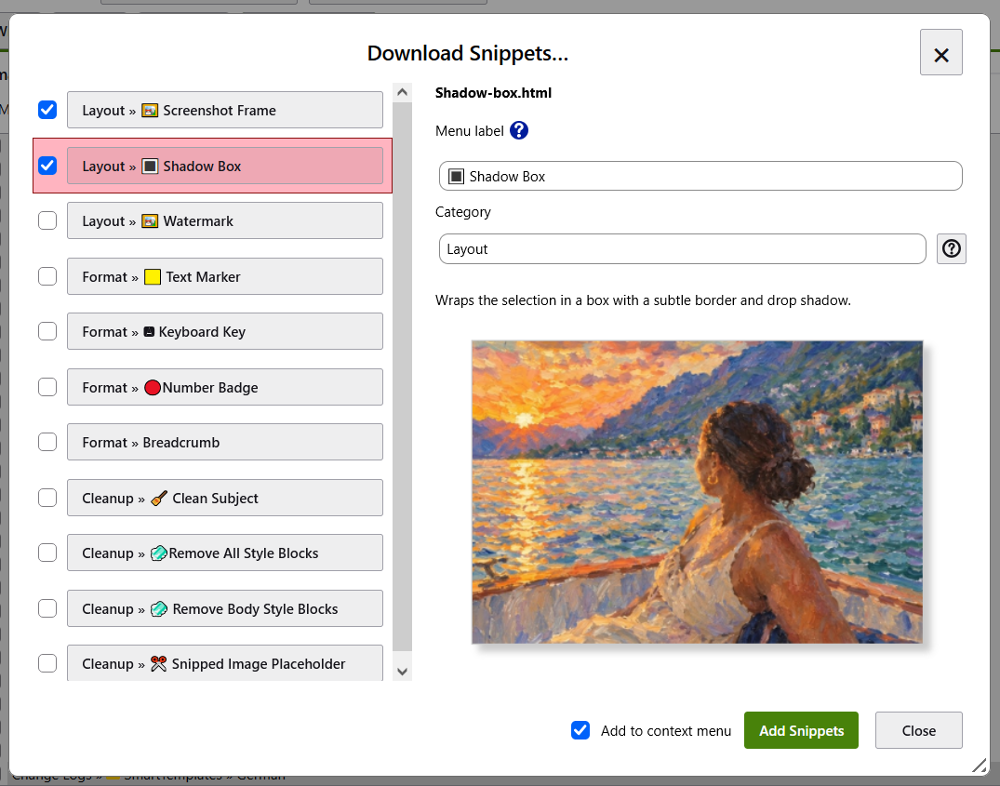
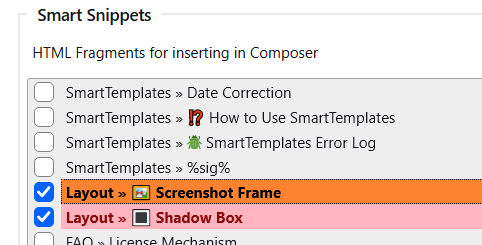

Welcome to the SmartTemplates Pro Snippets Library — a curated collection of handy, ready-to-use macros and HTML snippets designed to enhance your email templating and quoting experience. These snippets showcase practical ways to clean, trim, and customize your quoted content and templates, helping you save mailbox space, improve readability, and streamline your workflow.
Whether you want to remove unwanted styles, replace large inline images with placeholders, or fine-tune quote levels for neat conversations, these examples offer a starting point to tailor SmartTemplates to your needs.
Feel free to explore, adapt, and combine them to fit your personal style or organizational requirements.
Please note that some snippets use SmartTemplates Pro features. While many of these macros will function without a Pro license, they may occasionally display a notification bar prompting you to upgrade to the Pro version. This is part of the licensing mechanism and helps support ongoing development.
Before deploying any snippet in critical workflows, we recommend testing it thoroughly to ensure it behaves as expected in your environment.
Browse and add examples directly in SmartTemplates. Go to Settings » Templates » Smart Snippets and click Download Snippets to browse the online collection without leaving the add-on. The SmartTemplates snippets library includes text highlighting, decorative image frames, and macros for cleaning up quoted content and unwanted styles.
The initial collection and descriptions are in English. You can give each downloaded snippet your own menu label and category, including names in your language.


After a successful download, the panel closes and the new snippets appear immediately after the currently selected entry in the settings list, or at the end if none was selected. The snippet menus update automatically, so your downloads are ready to insert into a message. The HTML files and bundled resources are stored locally for reuse without downloading them again, and you can edit the local files to adapt the examples.
Choose whether to overwrite existing files. Existing files with identical contents are reused. If files differ, SmartTemplates lists them and asks for confirmation. Click OK to replace all listed files with the downloaded versions, including any accompanying resources. Click Cancel to leave all files unchanged and return to the download panel; you can choose another target folder to keep both versions.

THIS SECTION IS WORK IN PROGRESS
The famous yellow text marker effect. Simply select some text within your email and then let it do its magic!
<span class="highlight" style="background-color: rgba(255,255,102,0.9); padding: 1px 5px; border-radius: 7px 2px 7px 2px">*selection*</span>
Click on an inline image in your email and select this snippet to put it into a nice rounded border frame with a block shadow. I use this one daily in support when I send screen shots to my users.
You can still resize the image manually afterwards. For furter styling you can modify the CSS class screenshot-inline as part of your main templates.
<style>
.screenshot-inline, .screenshot-inline > img {
border-radius:7px;
}
</style>
<div class="screenshot-inline"
style="border: 1px solid rgba(80, 80, 80, 0.3); box-shadow: rgba(80, 80, 80, 0.3) 5px 5px 5px; width:max-content;
margin-bottom:0.8em;">*selection*</div>
Designed to make long email threads more lightweight.
<head>
<style>
.snipped {
border: 1px solid rgba(90,90,90,0.2);
background: linear-gradient(to bottom, #fdeff4 0%,#fdb9bd 51%,#fea2a3 59%,#ff999e 100%);
padding: 0.5em 1em;
border-radius: 3px;
box-shadow: rgba(80, 80, 80, 0.3) 5px 5px 5px;
}
</style>
</head>
%replaceQuotedTags("img","<div><span class='snipped' title="image was automatically removed using SmartTemplates Pro in order to conserve mailbox space: .">IMAGE SNIPPED</span></div>",2)%
Remove all global styles from quoted emails. When we reply to emails, and these are quoted or forwarded inline, style rules that affect tags like body, p or html will also affect our own emails this can always have bad side effects which may affect the style of our own email, so removing these is good practice.
%replaceQuotedTags("style","<!--style block removed-->")%
Create a breadcrumb trail from text, highlight a string with double > like: "Menu 1 >> Submenu >> Command" and this will do some nice replacements to generate a formated breadcrumb trail:
<span
style="font-family:'Roboto Condensed', 'Arial Narrow', 'Helvetica Neue', Arial, sans-serif; font-size: 0.93em ;font-stretch: condensed; font-weight: bold;">%replaceText(">>","<b style='color:#7B1616'>»</b>",selection)%</span>
This one removes prefixes such as "Fwd:", "Re: " etc. from the subject line.
%header.delete(subject,"^(Re: |Fwd: |AW: )*")%